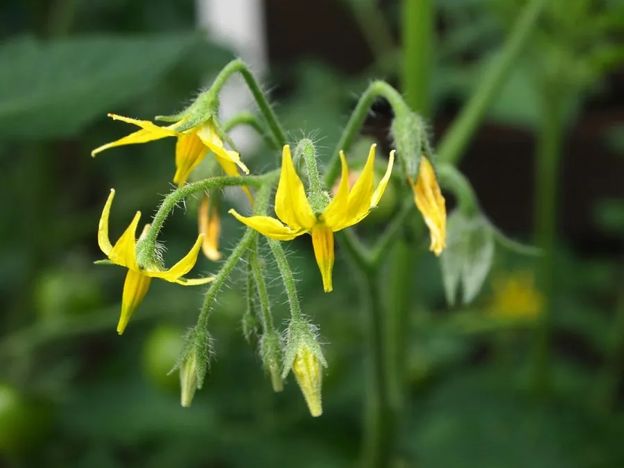

农作物与经济植物 · 植物界
番茄 Solanum lycopersicum

番茄的浆果酸甜多汁，富含番茄红素与维生素 C，可鲜食也可加工成酱，是世界上消费量最大的蔬菜之一。
- 分类
- 门被子植物门纲双子叶植物纲目茄目科茄科属茄属
- 栖息环境
- 温暖地区的菜园与温室，喜充足光照、肥沃排水良好土壤
- 地理分布
- 原产南美安第斯地区，现全球广泛栽培，中国产量居前列
- 保护级别
- 暂无评估（栽培作物）
物种志
番茄是茄科一年生草本，株高 0.6–2 m，茎半直立或蔓生，表面有细柔毛和腺毛，揉搓后有特殊气味。叶为羽状复叶，小叶不规则，边缘有锯齿。花黄色，聚伞花序，自花授粉。果实为浆果，形状有圆、椭圆、长形等，成熟时呈红、粉、黄或橙色，果肉多汁，内含扁平种子，表面有绒毛。
番茄原产南美洲安第斯山区，最初被欧洲人当作观赏植物，因被认为有毒而长期不食用，直到 18–19 世纪才逐渐走上餐桌。它喜温暖、光照充足，怕霜冻，适宜在肥沃、排水良好的土壤中栽培，可露地或温室种植。果实富含番茄红素、维生素 C 和有机酸，鲜食可做沙拉，也可加工成番茄酱、罐头和果汁；未成熟的青果含龙葵素，不宜食用。
形态与习性
- 株高0.6–2 m，茎半直立或蔓生
- 果实浆果，成熟时红、粉、黄或橙色
- 花序聚伞花序，花黄色
- 授粉自花授粉
- 营养富含番茄红素与维生素 C
- 原产地南美安第斯山区
- 主要用途鲜食与番茄酱、罐头等加工
趣味知识
- 番茄在欧洲最初是观赏植物，因被怀疑有毒而两三百年后才被食用。
- 番茄的红色主要来自番茄红素，加热后更易被人体吸收。
- 番茄未成熟时含龙葵素，青果不宜直接生食。
生态关系
- 传粉 ← 明亮熊蜂 熊蜂为番茄振动传粉